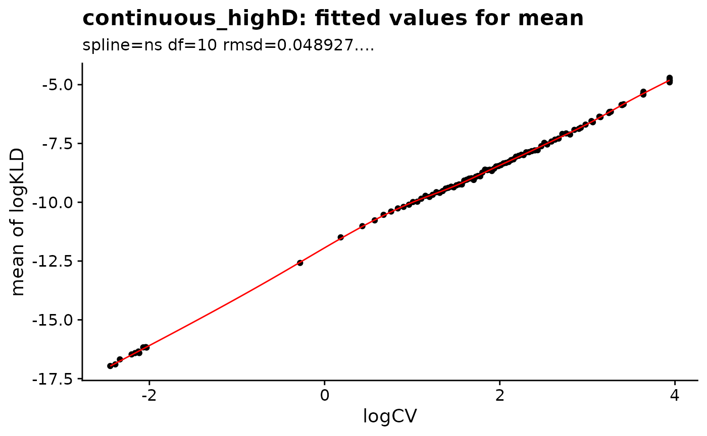
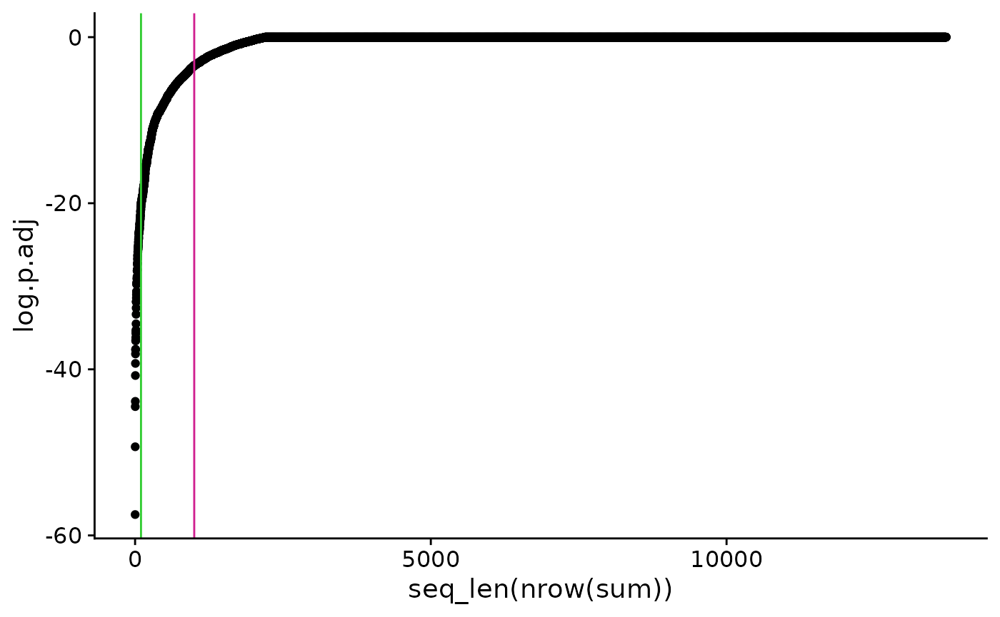

a08_gene_clustering.Rmd## Attaching SeuratObject## ── Installed datasets ───────────────────────────────────── SeuratData v0.2.2 ──## ✔ ifnb 3.1.0 ✔ ssHippo 3.1.4
## ✔ pbmc3k 3.1.4 ✔ stxBrain 0.1.1## ────────────────────────────────────── Key ─────────────────────────────────────## ✔ Dataset loaded successfully
## ❯ Dataset built with a newer version of Seurat than installed
## ❓ Unknown version of Seurat installed
library(singleCellHaystack)
library(ComplexHeatmap)## Loading required package: grid## ========================================
## ComplexHeatmap version 2.14.0
## Bioconductor page: http://bioconductor.org/packages/ComplexHeatmap/
## Github page: https://github.com/jokergoo/ComplexHeatmap
## Documentation: http://jokergoo.github.io/ComplexHeatmap-reference
##
## If you use it in published research, please cite either one:
## - Gu, Z. Complex Heatmap Visualization. iMeta 2022.
## - Gu, Z. Complex heatmaps reveal patterns and correlations in multidimensional
## genomic data. Bioinformatics 2016.
##
##
## The new InteractiveComplexHeatmap package can directly export static
## complex heatmaps into an interactive Shiny app with zero effort. Have a try!
##
## This message can be suppressed by:
## suppressPackageStartupMessages(library(ComplexHeatmap))
## ========================================
theme_set(cowplot::theme_cowplot())
select_cell_markers <- function(scores, max.overlap=1) {
sel <- apply(scores, 1, function(x) {
pos <- x > 0
npos <- sum(pos)
if (npos > 0 & npos <= max.overlap)
return(TRUE)
return(FALSE)
})
#rownames(scores)[sel]
scores[sel,]
}
set.seed(1)In this vignette we use the PBMC dataset from 10x available in the
SeuratData package.
pbmc <- LoadData("pbmc3k", "pbmc3k.final")
pbmc## An object of class Seurat
## 13714 features across 2638 samples within 1 assay
## Active assay: RNA (13714 features, 2000 variable features)
## 2 dimensional reductions calculated: pca, umap
coord <- Embeddings(pbmc, reduction="pca")
dim(coord)## [1] 2638 50
exprs <- GetAssayData(pbmc, assay="RNA", slot="data")
exprs[1:4, 1:4]## 4 x 4 sparse Matrix of class "dgCMatrix"
## AAACATACAACCAC AAACATTGAGCTAC AAACATTGATCAGC AAACCGTGCTTCCG
## AL627309.1 . . . .
## AP006222.2 . . . .
## RP11-206L10.2 . . . .
## RP11-206L10.9 . . . .
res <- haystack_continuous_highD(coord, exprs)## ### calling haystack_continuous_highD()...## ### Using package sparseMatrixStats to speed up statistics in sparse matrices.## ### Calculating row-wise mean and SD...## ### Filtered 1 genes with zero variance...## ### Using 100 randomizations...## ### Using 100 genes to randomize...## ### converting expression data from dgCMatrix to dgRMatrix## ### scaling input data...## ### deciding grid points...## ### calculating Kullback-Leibler divergences...## ### performing randomizations...## ### estimating p-values...## ### picking model for mean D_KL...## ### using natural splines## ### best RMSD : 0.049## ### best df : 10## ### picking model for stdev D_KL...## ### using natural splines## ### best RMSD : 0.08## ### best df : 9## ### returning result...
plot_rand_fit(res, "mean")
plot_rand_fit(res, "sd")
sum <- show_result_haystack(res)
head(sum)## D_KL log.p.vals log.p.adj
## LY6G6F 1.994737552 -61.62395 -57.48682
## AP001189.4 0.560430261 -53.46206 -49.32493
## GP9 0.369618675 -48.62653 -44.48940
## GZMB 0.005030405 -47.99422 -43.85709
## CLDN5 0.864521392 -44.88222 -40.74509
## FGFBP2 0.004488329 -43.42574 -39.28861
ggplot(sum, aes(x=seq_len(nrow(sum)), y=log.p.adj)) +
geom_point() +
geom_vline(xintercept=c(100, 1000), color=c("limegreen", "violetred"))
Next we look at the top 100 genes identified by haystack.
## D_KL log.p.vals log.p.adj
## LY6G6F 1.994737552 -61.62395 -57.48682
## AP001189.4 0.560430261 -53.46206 -49.32493
## GP9 0.369618675 -48.62653 -44.48940
## GZMB 0.005030405 -47.99422 -43.85709
## CLDN5 0.864521392 -44.88222 -40.74509
## FGFBP2 0.004488329 -43.42574 -39.28861We can use the top genes to calculate gene clusters using the single cell expression data.
## AAACATACAACCAC AAACATTGAGCTAC AAACATTGATCAGC
## LY6G6F 0 0 0
## AP001189.4 0 0 0
## GP9 0 0 0
Heatmap(m, column_split=pbmc$seurat_annotations, name="Expression", show_column_names=FALSE, column_title_rot=45)## `use_raster` is automatically set to TRUE for a matrix with more than
## 2000 columns You can control `use_raster` argument by explicitly
## setting TRUE/FALSE to it.
##
## Set `ht_opt$message = FALSE` to turn off this message.## 'magick' package is suggested to install to give better rasterization.
##
## Set `ht_opt$message = FALSE` to turn off this message.We can calculate cluster scores for each gene. Basically we compute the average of each gene in each cluster.
scores <- AverageExpression(pbmc, features=rownames(top_100_haystack), assays="RNA")[["RNA"]]
head(scores)## Naive CD4 T Memory CD4 T CD14+ Mono B CD8 T FCGR3A+ Mono
## LY6G6F 0.0000000 0.00000000 0.000000000 0.0000000 0.000000 0.00000000
## AP001189.4 0.0000000 0.00000000 0.000000000 0.0000000 0.000000 0.03068193
## GP9 0.0000000 0.01189881 0.008018989 0.0000000 0.000000 0.01159001
## GZMB 0.1327085 0.16999619 0.198919462 0.1178744 5.011299 0.24145661
## CLDN5 0.0000000 0.00000000 0.000000000 0.0000000 0.000000 0.01513322
## FGFBP2 0.1065733 0.13085714 0.091726089 0.1935568 4.541959 0.12754242
## NK DC Platelet
## LY6G6F 0.00000 0.0000000 7.359751
## AP001189.4 0.00000 0.0000000 12.269047
## GP9 0.00000 0.0000000 33.938348
## GZMB 49.85524 7.4516567 1.264483
## CLDN5 0.00000 0.0000000 11.913162
## FGFBP2 25.64858 0.1033588 0.000000## genes.pass
## 0 1 2 3 4 5 6
## 4 36 22 19 13 5 1We need to scale the scores.
## Naive CD4 T Memory CD4 T CD14+ Mono B CD8 T
## LY6G6F -0.3333333 -0.3333333 -0.3333333 -0.3333333 -0.3333333
## AP001189.4 -0.3342704 -0.3342704 -0.3342704 -0.3342704 -0.3342704
## GP9 -0.3336815 -0.3326296 -0.3329726 -0.3336815 -0.3336815
## GZMB -0.4330890 -0.4307911 -0.4290087 -0.4340032 -0.1324408
## CLDN5 -0.3338095 -0.3338095 -0.3338095 -0.3338095 -0.3338095
## FGFBP2 -0.3939467 -0.3910753 -0.3957023 -0.3836615 0.1305074
## FCGR3A+ Mono NK DC Platelet
## LY6G6F -0.3333333 -0.3333333 -0.33333333 2.6666667
## AP001189.4 -0.3267658 -0.3342704 -0.33427038 2.6666585
## GP9 -0.3326569 -0.3336815 -0.33368148 2.6666664
## GZMB -0.4263873 2.6311137 0.01794873 -0.3633423
## CLDN5 -0.3299980 -0.3338095 -0.33380950 2.6666645
## FGFBP2 -0.3914673 2.6262208 -0.39432680 -0.4065483We can see that there are clear cluster specific markers.
Heatmap(scores, name="Score")# Using the distribution P
Another approach is to use the distribution P used by haystack. This is the density weighted expression at the grid points. Haystack returns by default the density.
scores <- res$info$P